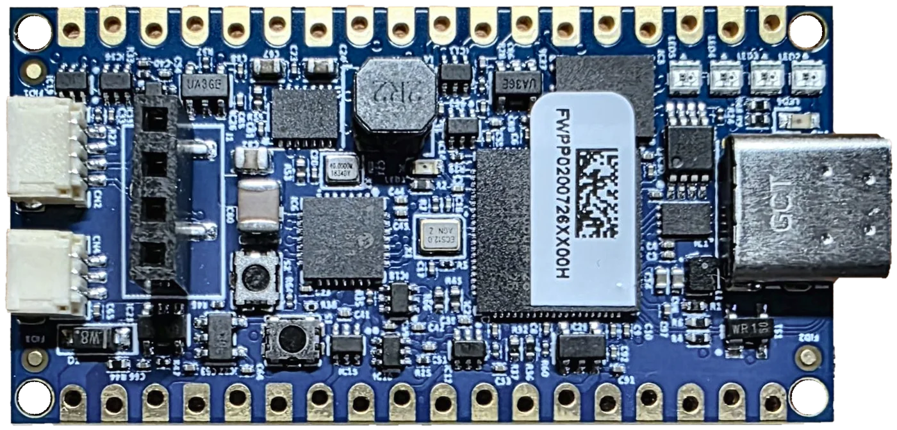
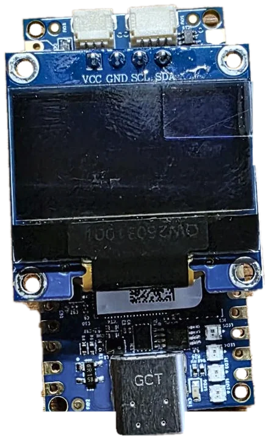
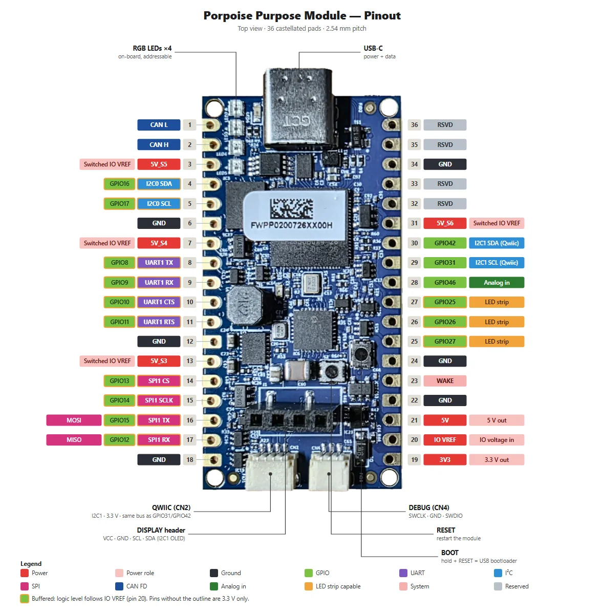
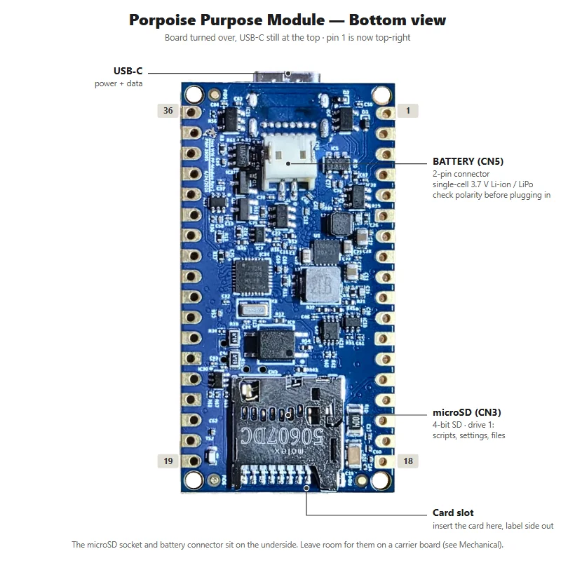

Porpoise Purpose Module
The Porpoise Purpose Module (PP Module) is a small FREE-WILi board for embedded control and bench work. It has CAN FD, UART, SPI, I2C, GPIO, an analog input, microSD storage, switchable power outputs and battery support, all on a 51 x 26 mm module with castellated edge pads.
It runs the same FREE-WILi firmware family as FREE-WILi 2. That means the same serial console, the same menu commands, the same OneWili API and the same rThon and WiliWasm scripting. Code you write for one board works on the other wherever the hardware matches.


Use Cases
- CAN FD node on your desk
- Level-shifted UART USB adapter
- Level-shifted SPI and I2C USB adapter
- Scripted test fixture with switchable power to the device under test
- Building block soldered into your own carrier board
- Battery-powered logger with microSD storage
- Moving a FREE-WILi 2 set-up into a permanent fixture
- Learning platform for embedded systems
Feature Set
- CAN FD: one channel with an on-board transceiver and software-switchable 120 Ω termination.
- Buffered I/O: 13 signals (UART, SPI, I2C, GPIO) behind level shifters. Set the logic level with IO VREF, from 1.8 V to 5 V, with 24 mA at 3.3 V or 32 mA at 5 V.
- 3.3 V I/O: a Qwiic I2C bus and a 0–3.3 V analog input.
- Power outputs: 3.3 V and 5 V outputs, plus four switchable power zone outputs you control from software.
- Battery: single-cell 3.7 V Li-ion / LiPo support with on-board charging and protection.
- Storage: 16 MB flash, 8 MB PSRAM and a microSD card slot.
- Extras: four addressable RGB LEDs, a header for an optional I2C OLED display, BOOT and RESET buttons and a 3-pin SWD debug connector.
- USB-C: power, the serial console and firmware updates.
- Mounting: 36 castellated pads at a 2.54 mm pitch. Solder them to a carrier board, or press standard headers in for temporary use.
- Same software: FREE-WILi console menus, OneWili API, rThon and WiliWasm scripting, and FREE-WILi GUI firmware updates.
Core hardware
- Processor
- 150 MHz dual-core microcontroller
- Memory
- 16 MB flash, 8 MB PSRAM, microSD card slot (4-bit SD)
- LEDs
- 4 on-board addressable RGB LEDs, plus up to 3 external LED strips
- Size
- 51.00 x 26.00 mm, 4 x Ø2.20 mm mounting holes
Interfaces
- CAN
- 1 x CAN FD with on-board transceiver and switchable termination
- UART / SPI
- 1 x UART with RTS/CTS and 1 x SPI controller, both buffered
- I2C
- I2C0 buffered on the edge pads, I2C1 at 3.3 V on the Qwiic connector
- GPIO / Analog
- 13 buffered GPIO with PWM, 2 x 3.3 V GPIO, 1 x 0–3.3 V analog input
Power
- Power in
- USB-C 5 V, or a single-cell 3.7 V Li-ion / LiPo battery
- Power out
- 3.3 V (1 A rail) and 5 V (2 A rail), shared with the module
- Power zones
- 4 switched outputs you can turn on, off or cycle from a script
- Charging
- 220 mA from USB, with over-charge and over-discharge protection
Software
- Console
- FREE-WILi serial menus over USB-C, same commands as FREE-WILi 2
- Host API
- OneWili, with the same command IDs as FREE-WILi 2
- Scripting
- rThon and WiliWasm scripts run from the microSD card
- Updates
- FREE-WILi GUI firmware update, or drag-and-drop UF2 recovery
FREE-WILi 2 Compatible Pinout

The module carries every signal of the FREE-WILi 2 20-pin GPIO header, with the same names and the same GPIO numbers: UART1, SPI1, I2C0, GPIO25–27, CAN H/L, 5V, 3V3 and IO VREF. A wiring set-up from FREE-WILi 2 moves straight across.
On FREE-WILi 2 the I/O voltage is chosen in software. On the module you wire IO VREF to 3V3, to 5V or to your target's own supply. Pins 19, 20 and 21 sit side by side, so one jumper sets it.
microSD and Battery

Scripts, settings and files live on the microSD card. Plug in a single-cell Li-ion or LiPo battery and the module runs without USB, charging whenever USB is connected.
Why Choose the Porpoise Purpose Module?
The Porpoise Purpose Module takes the interfaces you use most on FREE-WILi 2 and puts them on a board you can build into a fixture, a harness tester or your own product. You keep the same console, the same API and the same scripts, so what you prototype on the handheld runs on the module.
Porpoise Purpose Module Documentation
Pin-by-pin reference, I/O voltage set-up, power zones, CAN FD, scripting and firmware updates.
Read the Docs